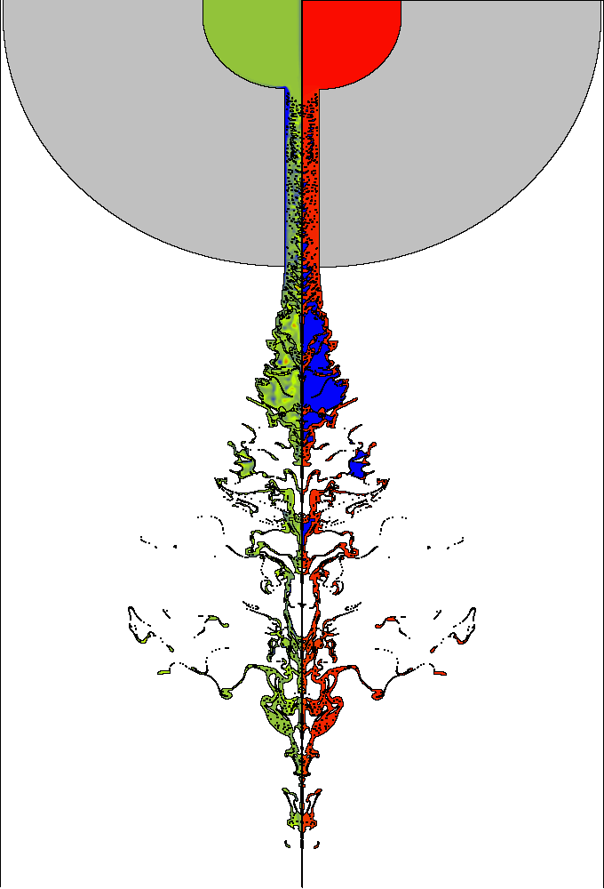

Basic Energy Sciences
Diesel Jet Spray Formation
ITAPS Personnel: Zhiliang Xu (BNL), James Glimm (BNL/SUNY SB), Roman Samulyak (BNL), Xiaolin Li (SUNY SB)
Combustion Personnel: Constantine Tzanos (ANL)
Project Status: Active
ITAPS members at BNL and SUNY SB have been working with scientists at Argonne to create a simulation code that models spray formation in diesel jet break up. This is an important aspect of the problem as it provides input to spray combustion models and is critical for predictive modeling of bio-diesel engine combustion. The overall goal of such an effort is the design of a nonpolluting, fuel-efficient engine. The flow geometry is shown in Figure 1.

Figure 1. The flow geometry for the diesel jet spray formation simulation.
Spray formation is a difficult problem for simulation due to
- the geometric complexity and multiscale nature of the spray,
- the stiff equation of state (EOS) for diesel fuel, and the need to model cavitations, phase transitions, shock waves and other strong hydrodynamic transients,
- the limited resolution of experimental diagnostics, and
- the sensitive dependence of spray formation on nozzle geometry and other problem parameters.
To model this process, we are using a 2D compressible fluid code, FronTier which has a high quality interface capability that enables multiscale resolution of complex geometries. Through our study, we have found that the formation of cavitation vapor bubbles is the key phenomena contributing to the breakup. We have developed a three scale hetrogeneous EOS model consisting of explicitly tracked cavitation vapor bubbles within the liquid diesel fuel for the mixed phase (diesel vapor/liquid) regime for cavitations in the nozzle and atomization, in the regime of a high speed jet. This appears to be the first calculation of this nature, and in this high speed atomization parameter regime.
The three scales we study are a thermal diffusion boundary layer (nm) at the edge of the cavitation bubbles, and regulating the rate of phase transition on the bubble wall, the bubble diameter, on the scale of microns, and the device (nozzle and combustion chamber) on the scale of cm.
New developments supported by ITAPS required to make this simulation a success include: AMR (from code merger with Overture), a phase transition module and Riemann solver, and a numerical model for the initiation of a tracked bubble, inserted when the pressure is less than a critical (tension) value.
The major conclusion is that a multiscale model has been able to achieve agreement with quantitative macroscale flow parameters such as spray opening angle and spray volume fraction or density, and as a qualitative measure of agreement with experiment, the occurrence of spray formation. See Figure 2.
The current work is mainly focused on the simulation of the two-phase mixture resulting from cavitation. The influence of other parameters on spray formation is a subject of further research.

Figure 2. Breakup of the diesel jet. Left frame is the vorticity plot. The right frame is the density plot. Blue denotes diesel vapor, red is liquid.